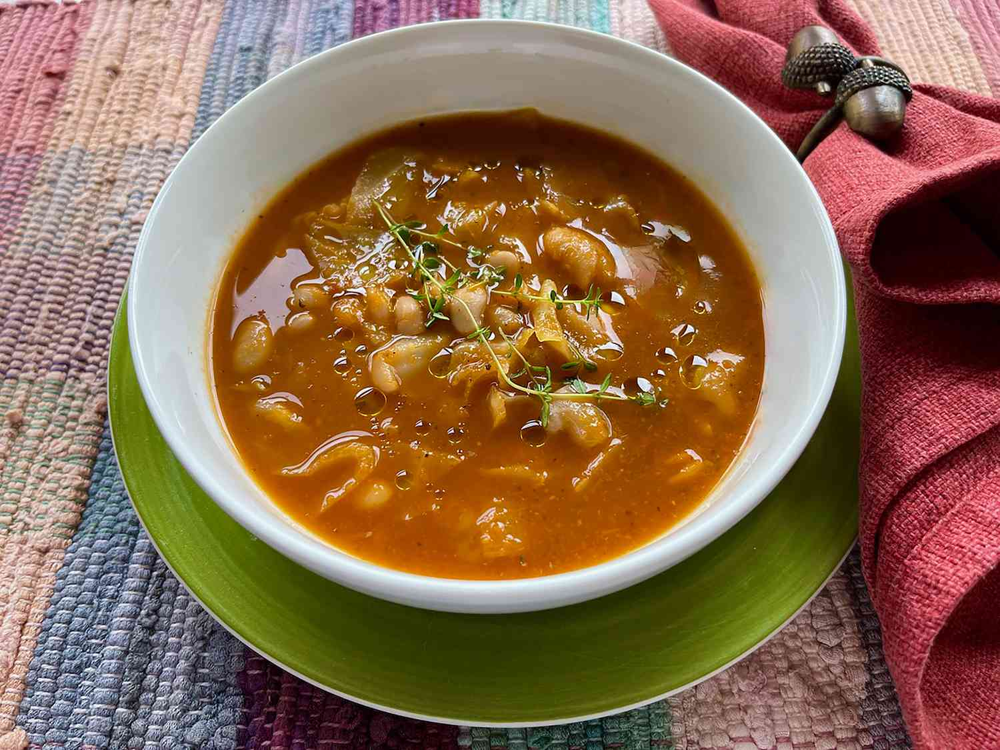

Yakamein

Description
- Prep Time: 20 mins
- Cook Time: 35 mins
- Total Time: 55 mins
- Servings: 8
Ingredients:
- 2 tablespoons olive oil, plus more for drizzling
- 2 leeks, white and light green parts only, chopped
- 3/4 cup sliced carrots
- 3 cloves garlic, minced
- 1 1/2 quarts low-sodium vegetable broth
- 1/4 cup tomato paste
- 2 teaspoons dried Italian herb seasoning
- salt and freshly ground black pepper to taste
- 1 pound cabbage, chopped
- 1 pinch red pepper flakes (optional)
- 2 (15 ounce) cans great Northern beans
- fresh thyme sprigs for garnish (optional)
Directions:
-
Heat olive oil in a Dutch oven over medium heat. Add leeks and carrots,
and cook, stirring frequently, about 3 minutes. Stir in garlic and cook
until fragrant, about 30 seconds.
-
Add oil to a heavy-bottomed pot, and heat on high until oil is
shimmering. Add beef in a single layer, and sear until a nice brown
crust forms, 3 to 5 minutes.
-
Pour in vegetable broth, stir in tomato paste and Italian seasoning, and
bring to a boil. Reduce heat to low, cover, and simmer until vegetables
are tender, about 10 minutes.
-
Using an immersion blender, puree the vegetables and liquid. Season with
salt and pepper.
-
ncrease heat to medium and bring to a boil. Stir in cabbage, red pepper
flakes, and a couple more pinches of salt, if desired. Bring to a boil,
reduce heat, and simmer until cabbage is tender, 20 to 25 minutes. Stir
in beans and simmer until beans are heated through, about 5 minutes
more.
-
Serve warm, garnished with fresh thyme sprigs, if desired, and drizzled
with olive oil.